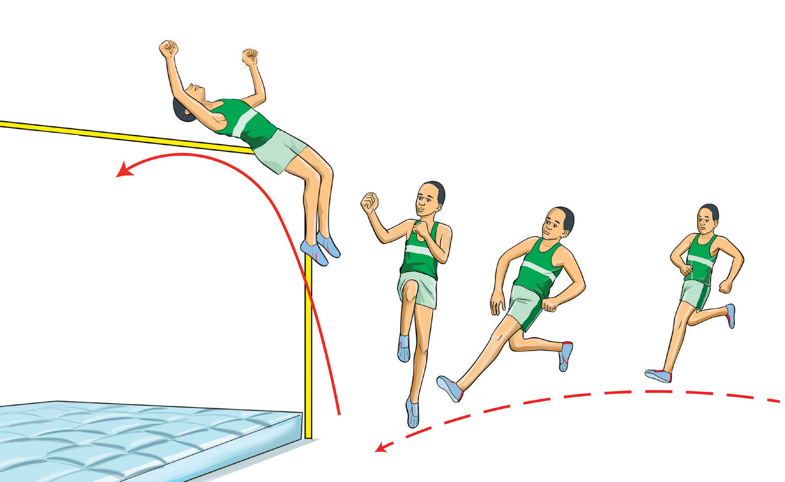

Flight
The flight occurs after take-off when the body is airborne, aiming to clear the bar. Proper body positioning and control are crucial for a successful jump. Follow these steps for an effective flight:
(i)
Raise your hips while keeping your head up to maintain balance and height;
(ii)
Extend your arms to assist in body control and clearance;
(iii)
Fully stretch the take-off leg as it passes over the bar; and
(iv)
Drop the shoulders while lifting the hips to create an arching motion, allowing smooth clearance, Figure 2.38.

d c b aBar clearance
In this phase, the athlete jumps up trying to pass over the crossbar, as shown in Figure 2.39, without dropping it. The following steps will help you practice clearing the bar successfully:
(i)
Drive the knee up till the shoulder reaches the bar;
(ii)
Extend the hips, lay body back towards the bar;
(iii)
Flex the knee and drop below the bar;
(iv)
Lift the hips while clearing the bar; and
(v)
When the hips clear the bar, pull the chin towards the chest and extend the legs to prevent heels from touching the bar.
SPORTS STUDIES FORM TWO.indd 67
9/17/25 9:54 AM